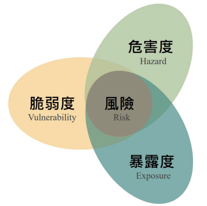

跟著小熊一起學
氣候風險・小熊說故事
按下播放，聽小熊介紹氣候風險！

先看這張圖三個因子交互作用，
三個因子交互作用，
形成氣候風險
圖中的三個區域，分別代表危害度、暴露度與脆弱度。它們不是各看各的，而是一起影響風險。
以大雨為例：雨勢有多強、哪些人與東西位在可能受影響的地方、有多容易受傷害及能否應付，都要一起考慮。
圖取自提供教材；教材標註來源：國家氣候變遷科學報告 2024 第五章。01 · 認識三個關鍵
雨有多大？誰在那裡？準備好了嗎？
點選卡片，看看小鎮裡對應的是什麼。
暴露度：看「人和東西的位置」
河邊低窪處有居民、學校和馬路，這是在說哪些人與東西可能受到淹水影響。它們「位在哪裡」，就是暴露度的重點。
02 · 小熊幫你記看到「居民、學校、房子、馬路
看到「居民、學校、房子、馬路
位在容易淹水的地方」
想到的就是：暴露度！
「雨很大」說的是危害度；「房子不堅固、應變準備不足」說的是脆弱度。三個角度一起看，才能了解氣候風險。
這句話主要在說哪個因子？
「很多居民、學校和馬路，都位在容易淹水的地方。」
選一個答案，小熊會告訴你為什麼。這是練習，不影響遊戲積分。
做好準備，讓影響小一點
- 留意危害：跟家人一起看天氣與防災資訊。
- 認識位置：了解住家、學校和避難地點的位置。
- 加強準備：熟悉避難路線、學習防災知識，和大人一起做好準備。
小朋友可以先和家人、老師討論；規劃土地、改善排水與建築安全，也需要政府及社區共同努力。